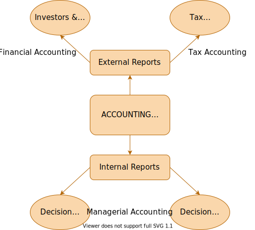

Main objective of the course
How do we measure the creation of value?
Cost and profitability measurements.
Goal: decision making and incentives.
Mario Milone

Financial Accounting
Managerial Accounting
Study internal information in order to
Need data from the internal accounting system to make those decisions.
How do we measure the creation of value?
Cost and profitability measurements.
Goal: decision making and incentives.
| Session | Topic | Case Study |
|---|---|---|
| 1 | Introduction | bou |
| 2 | hihi | bah |
Textbook
Managerial Accounting: Making Decisions and Motivating Performance
by S. Datar and M. Rajan. Pearson, 2014, ISBN 978-0-13-702487-2
Expenses
Cost
Direct Costs
Indirect Costs
Fixed Costs
Variable Costs
MANUFACTURING
Most are charged to the product.
Sometimes, fixed OH is not charged.
NON-MANUFACTURING
Not charged to the product
Sunk and Incremental costs are relative to a decision.
Sunk Costs
Incremental Costs
Opportunity cost: what is forgone by choosing an alternative
Very important concept for decision making!
You won a free ticket to see an Eric Clapton concert (which has no resale value).
Bob Dylan is performing on the same night and is your next-best alternative activity.
Tickets to see Dylan cost \$40 and you would be willing to pay \$50 for it on any given day.
What is the opportunity cost of seeing Eric Clapton?
Answer: $10
Amazon is costing the United States Post Office massive amounts of money for being their Delivery Boy. Amazon should pay these costs (plus) and not have them borne by the American Taxpayer. Many billions of dollars. Only fools, or worse, are saying that our money losing Post Office makes money with Amazon. THEY LOSE A FORTUNE, and this will be changed. Also, our fully tax paying retailers are closing stores all over the country…not a level playing field!
Donald J. Trump
Collection
Transportation
Sorting
Delivery
| Total Overhead Cost ($ millions) |
|
|---|---|
| Transport | $ 1,360 |
| Sorting | $ 510 |
| Delivery | $ 765 |
| Collection | $ 765 |
| Total | $ 3,400 |
Is this cost variable or fixed?
| Variable Cost ($ per unit) | |
|---|---|
| Transport | $ 0.40 |
| Sorting | $ 0.10 |
| Delivery | $ 0.25 |
| Collection | $ 0.25 |
| Total | $ 1 |
| Retail | Fedex | Amazon | |
|---|---|---|---|
| Price / unit | $4.00 | $2.20 | $1.05 |
| Volume (millions) | 1,000 | 300 | 400 |
$$ \text{Average Cost} = \frac{\text{Total Cost}}{\text{Volume}} $$
Without the Amazon deal, Fedex volume would be 270 millions instead of 300. (we’ll see why)
$$ \text{Average Cost} = \frac{\$3400}{1700} = \$2 $$
Fedex price = $2 * (1+10%) = $2.2
$$ \text{Average Cost} = \frac{\$2970}{1270} = \$2.33 $$
Fedex price = $2.33 * (1+10%) = $2.57
With Amazon deal (exclude retail)
Without Amazon deal
What price should USPS charge Amazon to see no change in revenues?
300 * 2.2 − 1 + 400 * p − 1 = 270 * (2.57 − 1)
For USPS to breakeven on its Amazon deal, Amazon must pay $1.16 per package.
For decision making, focus on incremental costs.